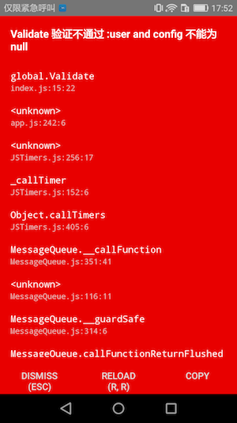
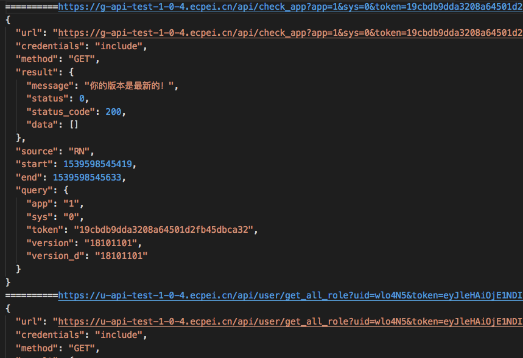

DevModuleManager
作为辅助开发模块，仅仅在debug版本中会生效
DevModuleManager 管理器
DevModule 调试模块的基类
-
DevModuleManager
-
管理调试模块
-
接受配置参数
- 接受RypYo.registerBoots第三个参数(Config.dev)作为调试环境参数
- 参数会传递给各个模块
import { RypYo } from "react-native-ecpei-framework"; RypYo.registerBoots("com.ryp.rn.core", AppModule, Config={ dev: { } })
-
-
DevModule 调试模块
作为辅助开发类
在debug 版本中运行
-
DevModule
class DevModule { constructor(name,disable){ name配置在全局配置得到对应配置 disable是否开启开模块 } run(isEnv,config){ isEnv 表示是否为开发环境 config DevModuleManager传递的参数 } } -
默认模块：RNValidate 进行代码验证
export default class RNValidate extends DevModule { run = (isEnv) => { if (!isEnv) return; global.Validate = function (...args) { desc = args.pop() if (!args.reduce((one, two) => { return (one && two) }, true)) { throw new Error("RNValidate 不通过 " + desc) return } } } } 取所有条件的并集,来判断条件是否满足 Dome: let user = null; let config = null; Validate(user,config,"user and config 不能为null"); login(user,config) 效果见下图
-
默认模块：AjaxIntercept 拦截所有网络请求
拦截RN | H5 所有网络请求 作为日志
- 如何将网络日志序列化到本地
//new AjaxIntercept("WebLog")接受WebLog参数 进行调试模块的配置 RypYo.registerBoots("com.ryp.rn.core", AppModule, { dev: { WebLog:{ websocket:"ws://172.18.0.201:8888", disable:false } } }) mac: 解压WebLog.zip 运行 npm i 运行 npm run start(开启服务) phone: 拦截到网络日志会将日志传递到WebLog.websocket对应的地址上
-
-
如何手动编写自定义调试模块
编写代码 import { DevModule, DevModuleManager } from "react-native-ecpei-framework"; class DevConsole extends DevModule{ run(isEnv,config){ //config == DevLog(见配置) if(isEnv){ const _console = console; global.console = { ..._console, log:()=>{ } } } } } 注册模块 DevModuleManager.addModule(new DevConsole("DevLog")) 配置 RypYo.registerBoots("com.ryp.rn.core", AppModule, { dev: { DevLog:{ disable:false, xx:"", ..... } } })